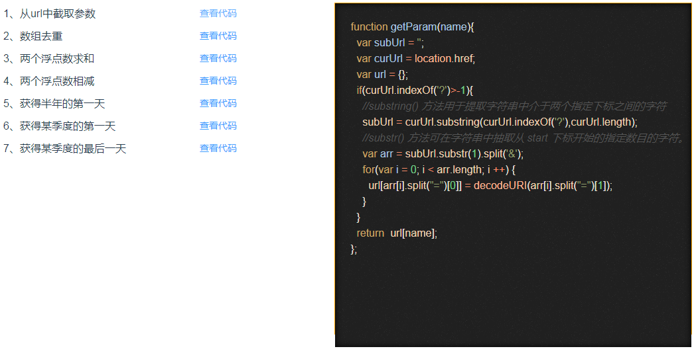

这是我自己做的一个左边点击对应的标题，右边显示相应代码的一个功能。代码显示这里用的是vue-codemirror插件。
1、安装：npm install vue-codemirror --save
2、在main.js中引入
import VueCodeMirror from 'vue-codemirror'
import 'codemirror/lib/codemirror.css'
Vue.use(VueCodeMirror)3、在组件中使用
import { codemirror } from 'vue-codemirror'
import "codemirror/theme/ambiance.css"; // 这里引入的是主题样式，根据设置的theme的主题引入，一定要引入！！
require("codemirror/mode/javascript/javascript"); // 这里引入的模式的js，根据设置的mode引入，一定要引入！！在组件中声明：
components:{
codemirror
},html代码写法：
<codemirror
ref="mycode"
:value="curCode"
:options="cmOptions"
class="code">
</codemirror>data中cmOptions的配置，这里我写的比较简单，具体的配置项，可以去查官方文档
curCode:'',
cmOptions:{
value:'',
mode:"text/javascript",
theme: "ambiance",
readOnly:true,
}第1步、第2步和第一种用法中的相同
3、在组件中使用
import CodeMirror from 'codemirror/lib/codemirror'
import "codemirror/theme/ambiance.css";
require("codemirror/mode/javascript/javascript");在组件中写法，要写在 mounted中：
mounted(){
this.editor = CodeMirror.fromTextArea(this.$refs.mycode, {
mode:"text/javascript",
theme: "ambiance",
readOnly:true,
},html代码写法：
<textarea ref="mycode" class="codesql public_text" v-model="code"></textarea>在切换改变值的方法，需要用到setValue方法，而在第一种方式中直接改变v-model绑定的值就可以了
changeCode(value){
this.code = value;
this.editor.setValue(this.code);
}